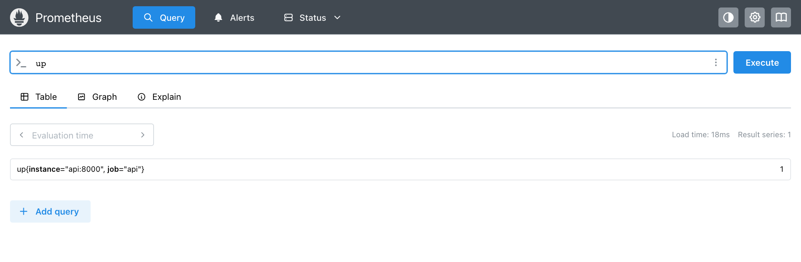
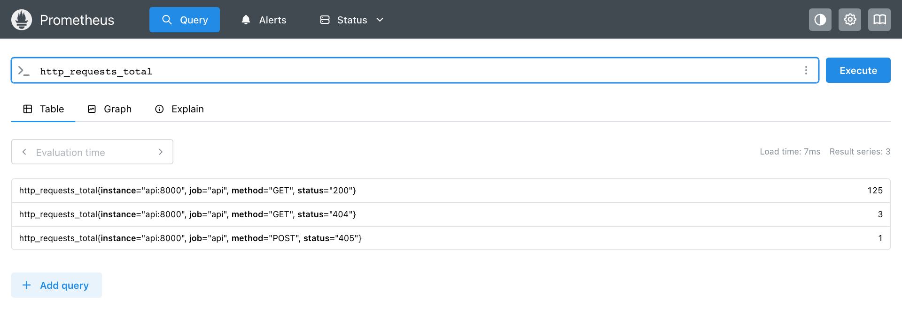

Модуль 2 · как работает prometheus · сбор метрик
Глава 2.6
Первый запуск:
Prometheus и FastAPI
Практическая глава модуля. Здесь запускается весь путь из главы 2.1: приложение FastAPI с одной метрикой, Prometheus, который собирает её раз в 15 секунд, и первый запрос к сохранённым данным. Каждый файл стенда разобран по строкам, каждая команда показана с ожидаемым выводом. Результат работы — target в состоянии UP на странице Status → Target health и ответ на запрос up.
- Категория
- Практика
- Уровень
- Начальный
- Нужно
- Docker Desktop или Docker Engine с Compose v2; браузер
- Результат
- Target UP, запросы
upиhttp_requests_total
§1Состав стенда
Стенд — папка prometheus-start из архива модуля. Приложение и Prometheus работают в двух контейнерах одной сети Docker Compose; Python на компьютере для основного варианта не нужен.
↓ Скачать prometheus-start.zip
| Адрес на компьютере | Что открывается |
|---|---|
http://localhost:8020/ | Приложение: JSON с названием сервиса |
http://localhost:8020/metrics | Ответ /metrics — то же, что получает Prometheus |
http://localhost:9092/ | Веб-интерфейс Prometheus |
Порты 8020 и 9092 выбраны так, чтобы не пересекаться со стендом модуля 1 и с программами, которые часто занимают 8000 и 9090. Оба порта открыты только на 127.0.0.1: с других компьютеров сети стенд недоступен.
§2Приложение app.py
Ниже — рабочая часть файла. Три пути для опыта с ошибками (/metrics/slow, /metrics/broken, /metrics/html) опущены: рабочая конфигурация к ним не обращается.
from fastapi import FastAPI, Request from fastapi.responses import PlainTextResponse, Response from prometheus_client import ( CONTENT_TYPE_LATEST, CollectorRegistry, Counter, disable_created_metrics, generate_latest, ) disable_created_metrics() registry = CollectorRegistry() HTTP_REQUESTS = Counter( "http_requests_total", "Total HTTP requests", ["method", "status"], registry=registry, ) SERVICE_PATHS = {"/metrics", "/metrics/slow", "/metrics/broken", "/metrics/html"} app = FastAPI(title="Prometheus start") @app.middleware("http") async def count_requests(request: Request, call_next): response = await call_next(request) if request.url.path not in SERVICE_PATHS: HTTP_REQUESTS.labels(request.method, str(response.status_code)).inc() return response @app.get("/items/{item_id}") async def get_item(item_id: int): if item_id > 100: return PlainTextResponse("not found", status_code=404) return {"item_id": item_id} @app.get("/metrics") async def metrics(): return Response(generate_latest(registry), media_type=CONTENT_TYPE_LATEST)
| Строка | Что делает | Если убрать или изменить |
|---|---|---|
disable_created_metrics() | Отключает служебные ряды _created | В ответе появится второй ряд на каждое сочетание меток (глава 2.3, §5) |
registry = CollectorRegistry() | Отдельный реестр только для метрик приложения | С глобальным реестром в ответе будут и python_gc_*, python_info, в Linux — process_* |
Counter("http_requests_total", …) | Счётчик с HELP «Total HTTP requests» и метками method, status | Другие имена меток — другие ряды; метка с неограниченными значениями (путь с id) — рост кардинальности |
@app.middleware("http") | Функция, через которую проходит каждый запрос; увеличивает счётчик после ответа | Счётчик придётся увеличивать в каждом обработчике вручную |
if … not in SERVICE_PATHS | Не считает запросы Prometheus к /metrics | Счётчик GET 200 будет расти на 4 в минуту без пользователей |
str(response.status_code) | Статус как строка: значение метки всегда строка | labels() приведёт число к строке сам; явное str показывает, что метка — текст |
generate_latest(registry) | Текст всех метрик реестра в формате Prometheus | — |
media_type=CONTENT_TYPE_LATEST | Заголовок text/plain; version=1.0.0; charset=utf-8 | У Response без media_type заголовка Content-Type нет совсем, и Prometheus 3 отклонит ответ (глава 2.3, §6) |
Python в этой строке: @app.middleware("http") и await call_next(request)
Декоратор регистрирует функцию как промежуточный обработчик: FastAPI вызывает её для каждого запроса и передаёт call_next — функцию, которая выполняет обычный обработчик пути. Всё, что стоит до await call_next(request), выполняется до обработчика; всё после — когда ответ уже готов и известен его статус. Поэтому счётчик увеличивается после call_next: только там есть response.status_code.
Python в этой строке: HTTP_REQUESTS.labels("GET", "200").inc()
labels() возвращает дочерний счётчик для конкретного сочетания меток и создаёт его при первом вызове. inc() увеличивает его на 1, inc(5) — на 5. Уменьшить counter нельзя: библиотека вызовет исключение.
>>> from prometheus_client import Counter, CollectorRegistry, generate_latest
>>> r = CollectorRegistry()
>>> c = Counter("demo_total", "Demo", ["method"], registry=r)
>>> c.labels("GET").inc(); c.labels("GET").inc()
>>> print(generate_latest(r).decode())
# HELP demo_total Demo
# TYPE demo_total counter
demo_total{method="GET"} 2.0
# HELP demo_created Demo
# TYPE demo_created gauge
demo_created{method="GET"} 1.790692138359471e+09
>>> c.labels("GET").inc(-1)
Traceback (most recent call last):
...
ValueError: Counters can only be incremented by non-negative amounts.§3Конфигурация и Compose
Файл prometheus.yml разобран в главе 2.2: одно задание api, target api:8000, интервал 15 с, timeout 10 с. Файл compose.yaml связывает два сервиса.
name: prometheus-start services: api: build: . ports: ['127.0.0.1:8020:8000'] prometheus: image: prom/prometheus:v3.5.0 command: - --config.file=/etc/prometheus/${PROM_CONFIG:-prometheus.yml} - --storage.tsdb.path=/prometheus - --web.enable-lifecycle ports: ['127.0.0.1:9092:9090'] volumes: - ./prometheus.yml:/etc/prometheus/prometheus.yml:ro - ./prometheus-errors.yml:/etc/prometheus/prometheus-errors.yml:ro - prometheus-data:/prometheus depends_on: [api] volumes: prometheus-data:
| Строка | Смысл |
|---|---|
build: . | Образ приложения собирается из Dockerfile в этой папке |
127.0.0.1:8020:8000 | Порт 8000 контейнера доступен на компьютере как localhost:8020. Prometheus этот порт не использует: он обращается к api:8000 внутри сети |
prom/prometheus:v3.5.0 | Официальный образ с зафиксированной версией. Тег latest не используется, чтобы результат не менялся с выходом новых версий |
--config.file=…${PROM_CONFIG:-prometheus.yml} | Файл конфигурации; переменная PROM_CONFIG подставляет файл опыта из главы 2.4, по умолчанию — рабочий |
--storage.tsdb.path=/prometheus | Каталог TSDB внутри контейнера. Флаг command заменяет все аргументы образа по умолчанию, поэтому путь указан явно |
--web.enable-lifecycle | Разрешает POST /-/reload — перечитать конфигурацию без перезапуска |
./prometheus.yml:…:ro | Файл с компьютера виден в контейнере, только для чтения. Правка файла на компьютере + reload меняют конфигурацию |
prometheus-data:/prometheus | Именованный том: данные переживают пересоздание контейнера и удаляются только docker compose down -v |
§4Запуск
Команды выполняются в папке prometheus-start. Переключатель системы вверху страницы показывает команды для вашей ОС; в macOS и Linux они совпадают.
- Собрать образ и запустить оба сервиса. Первый запуск скачивает образы Python и Prometheus, это занимает от одной до нескольких минут.
Терминалпапка prometheus-start docker compose up -d --build
- Проверить, что контейнеры работают.
docker compose psвывод на стенде, колонки сокращены NAME IMAGE STATUS PORTS prometheus-start-api-1 prometheus-start-api Up 17 seconds 127.0.0.1:8020->8000/tcp prometheus-start-prometheus-1 prom/prometheus:v3.5.0 Up About an hour 127.0.0.1:9092->9090/tcp
- Отправить запросы к приложению, чтобы у счётчика появились ряды.
macOS, Linuxbash, zsh for i in $(seq 1 20); do curl -s -o /dev/null http://localhost:8020/items/$i; done curl -s -o /dev/null http://localhost:8020/items/500
WindowsPowerShell 1..20 | ForEach-Object { Invoke-WebRequest -UseBasicParsing "http://localhost:8020/items/$_" | Out-Null } curl.exe -s -o NUL http://localhost:8020/items/500 - Посмотреть ответ /metrics. В Windows вместо
curlпишутcurl.exe: в PowerShell словоcurl— псевдоним другой команды.curl http://localhost:8020/metricsпосле 20 запросов и одного 404 # HELP http_requests_total Total HTTP requests # TYPE http_requests_total counter http_requests_total{method="GET",status="200"} 20.0 http_requests_total{method="GET",status="404"} 1.0 - Открыть Prometheus:
http://localhost:9092, меню Status → Target health.
В Prometheus 2.x страница называлась Status → Targets. В интерфейсе Prometheus 3 она переименована в Status → Target health; адрес страницы прежний — /targets. Во многих инструкциях в интернете встречается старое название.
§5Status → Target health

| Элемент страницы | Значение на снимке | Что означает |
|---|---|---|
| Заголовок блока | api | Scrape pool — имя задания job_name |
| Счётчик справа | 1 / 1 up | Сколько target задания доступны из скольких |
| Endpoint | http://api:8000/metrics | Полный URL, собранный из служебных меток (глава 2.2, §2). Ссылка ведёт на этот адрес, но из браузера на компьютере имя api не откроется: оно существует только в сети Compose |
| Labels | instance="api:8000", job="api" | Метки target, которые получит каждый ряд. Стрелка раскрывает служебные метки |
| Last scrape | 4.335s ago, 4ms | Сколько прошло с начала последнего scrape и сколько он длился — то же, что scrape_duration_seconds |
| State | UP | Последний scrape успешен, up = 1. При ошибке — DOWN и красный блок с текстом ошибки |
Сразу после запуска состояние может быть UNKNOWN: target уже в списке, но его первый scrape ещё не наступил. Из-за смещения внутри интервала (глава 2.4, §3) ожидание бывает почти 15 секунд.
§6Первые запросы
Вкладка Query принимает выражение PromQL. Для этой главы достаточно самого простого выражения — имени метрики: оно выбирает все ряды с этим именем. Вкладка Table показывает последнее значение каждого ряда, Graph — историю.

up: один target, значение 1
http_requests_total: к меткам приложения добавлены instance и job| Выражение | Что показывает |
|---|---|
up | Доступность всех target: 1 или 0 |
http_requests_total | Все ряды счётчика запросов |
http_requests_total{status="404"} | Только ряды с меткой status="404": фигурные скобки отбирают ряды по меткам |
scrape_duration_seconds | Сколько длился последний scrape каждого target |
up[2m] | Все отсчёты up за 2 минуты с отметками времени (только во вкладке Table) |
Значения в таблице меняются только после очередного scrape. Если отправить 10 запросов и сразу нажать Execute, число может не измениться: новые значения появятся не позже чем через 15 секунд.
§7Остановка приложения
Опыт повторяет главу 2.4, §8 на своём компьютере.
- Остановить приложение:
docker compose stop api. - Через 15–30 секунд обновить Target health: состояние
DOWN, под target — текст ошибки. Текст зависит от окружения: на стенде в Docker Desktop это былEOF, затемcontext deadline exceeded. - В Query выполнить
up— значение 0;http_requests_total— пустой результат. - Запустить приложение:
docker compose start api. Через интервал —UP.http_requests_totalостаётся пустым до первого запроса к приложению: счётчик нового процесса начинается с нуля. - Во вкладке Graph выражение
upза 5 минут: провал до 0 на время остановки.
§8Если target не UP
| Что видно | Причина | Что сделать |
|---|---|---|
Страница localhost:9092 не открывается | Контейнер Prometheus не запущен или завершился | docker compose ps; docker compose logs prometheus — ошибка в конфигурации видна в конце журнала |
Target UNKNOWN | Первый scrape ещё не прошёл | Подождать до 15 секунд |
connection refused для localhost:… | В targets записан localhost, а Prometheus в контейнере | Записать api:8000 (глава 2.2, §4) |
404 Not Found | Неверный путь | Проверить metrics_path и путь в app.py |
unsupported Content-Type | Обработчик /metrics не задаёт media_type | Вернуть media_type=CONTENT_TYPE_LATEST |
UP, но запрос http_requests_total пустой | К приложению ещё не было запросов, или прошло меньше интервала | Отправить запросы (§4, шаг 3), подождать 15 с |
| Порт 8020 или 9092 занят | Другая программа на компьютере | Изменить левое число в ports в compose.yaml, например 127.0.0.1:8021:8000; правый порт не трогать |
Изменения в prometheus.yml не видны | Конфигурация читается при запуске | curl -X POST http://localhost:9092/-/reload или docker compose restart prometheus |
Перед перезагрузкой полезно проверить файл программой promtool, которая входит в образ Prometheus:
$ docker compose exec prometheus promtool check config /etc/prometheus/prometheus.yml Checking /etc/prometheus/prometheus.yml SUCCESS: /etc/prometheus/prometheus.yml is valid prometheus config file syntax
§9Вариант без Docker
Если Docker недоступен, приложение и Prometheus запускаются как обычные программы. Вариант проверен на стенде в macOS с архивом prometheus-3.5.0.darwin-arm64: target localhost:8020 получил состояние up.
- Скачать архив Prometheus 3.5.0 для своей системы со страницы prometheus.io/download и распаковать. В архиве — программы
prometheusиpromtool. - В папке стенда создать окружение Python и установить зависимости:
python -m venv .venv, затем.venv/bin/pip install -r requirements.txt(в Windows —.venv\Scripts\pip). - Запустить приложение:
.venv/bin/uvicorn app:app --port 8020. - Во втором терминале запустить Prometheus с конфигурацией из стенда:
./prometheus --config.file=prometheus-local.yml. Интерфейс откроется наhttp://localhost:9090, данные — в папкеdataрядом.
В prometheus-local.yml target — localhost:8020: оба процесса работают на одном компьютере и видят один localhost.
§10Задания и проверка
Готово, если
api: 1 / 1 up, состояние UP.instance="api:8000", job="api".http_requests_total возвращает не меньше двух рядов, значения совпадают с /metrics.up = 0 и состояние DOWN; после запуска — снова UP.Задания для самостоятельной работы. Каждое меняет один параметр; результат проверяется в интерфейсе Prometheus.
- Интервал. Установите в
prometheus.ymlscrape_interval: 5s, перезагрузите конфигурацию и выполнитеup[1m]. Сколько отсчётов стало за минуту и какойscrape_timeoutпоказывает Status → Configuration? - Метка target. Добавьте target метку
env: dev(глава 2.2, §5). На каких рядах она появилась? - Ошибка пути. Добавьте в задание
metrics_path: /stats. Запишите текст ошибки и найдите, что изменилось в ответе/metricsприложения через минуту. - Вторая метрика. Добавьте в
app.pygaugeitems_in_progress, который увеличивается в начале обработки/items/{id}и уменьшается в конце. Пересоберите образ (docker compose up -d --build) и найдите метрику в Query.
docker compose up -d --build
docker compose ps
docker compose stop api
docker compose start api
docker compose downdown -v удаляет и данные Prometheus.
promtool check config prometheus.yml
curl -X POST localhost:9092/-/reloadReload работает благодаря --web.enable-lifecycle.
localhost:8020/metrics
localhost:9092/targets
localhost:9092/queryВнутри сети Compose приложение — api:8000.
up
http_requests_total
http_requests_total{status="404"}
scrape_duration_secondsЗначения обновляются раз в scrape_interval.
Вопрос 1Ссылка http://api:8000/metrics в колонке Endpoint не открывается в браузере. Что это значит?
UP означает, что Prometheus успешно собрал метрики. Он делает это изнутри сети Compose.
Верно. Адрес target записан так, как его видит Prometheus, а браузер работает на компьютере.
Этот флаг разрешает перезагрузку конфигурации и к адресам target отношения не имеет.
Вопрос 2Отправили 10 запросов и сразу выполнили http_requests_total. Значение не изменилось. Почему?
Верно. Prometheus видит значения на момент последнего scrape; новое появится не позже чем через
scrape_interval.Счётчик увеличивается сразу после ответа;
/metricsпокажет новое значение немедленно.Исключены только служебные пути
/metrics….
- Prometheus. Getting started — prometheus.io/docs/prometheus/latest/getting_started
- Prometheus. Installation: using Docker — prometheus.io/docs/prometheus/latest/installation
- prometheus-client для Python: FastAPI и ASGI — prometheus.github.io/client_python
- FastAPI. Middleware — fastapi.tiangolo.com/tutorial/middleware
- Стенд модуля: Docker Desktop, Prometheus 3.5.0, образ python:3.12-slim; все выводы получены 29.09.2026